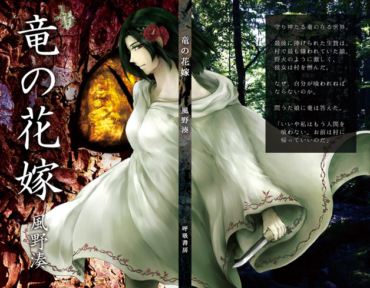
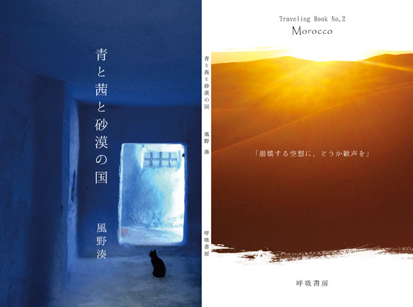
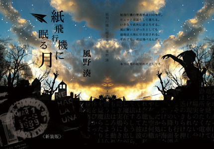
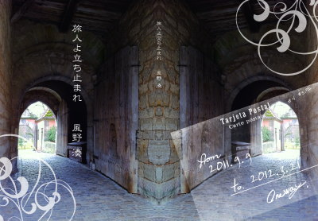
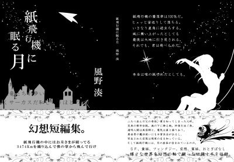

雲の呼吸と同じリズムで。通販ご案内
通信販売を希望される方は、下記の必要事項を本文に記入の上、ご連絡くださいませ。
【必要記入事項】
１：依頼者氏名
２：送付先住所
３：メールアドレス
４：購入希望書籍のタイトルと冊数
折り返し、振込先などの詳細をご連絡いたします。発送はクロネコメール便です。
配送事故や遅延を避けるため、本名でのお申し込みをお願いします。
ご連絡いただいた個人情報は、書籍発送後、速やかに破棄いたします。
◇お支払いについて
お支払いは「楽天銀行」への銀行振込でお願いします。（お手数ですが、振込手数料はご負担くださいませ。）
書籍代に、送料・梱包料として100円を加えた価格が振り込み料金となります。

【通販対応書籍】
『竜の花嫁』 販売価格：500円

ファンタジー / 新書オンデマンド / フルカラー表紙 / 178P
⇒立ち読み公開中です。
【本編目次】
名もなき竜の宮Ⅰ
竜の花嫁
一章 嫁入りの日
二章 金の瞳、遠雷の声
三章 雨と眠りに安らぐもの
四章 かつて殺されたすべての私たちへ
五章 野火迫る
六章 竜の花嫁
名もなき竜の宮Ⅱ
====================================
守り神たる竜の在る世界。
最後に捧げられたのは、村でもっとも嫌われた娘。
野火のように激しく、荒々しく、彼女は村を憎んだ。
なぜ、自分が殺されねばならないのか。
問うた娘に竜は答えた。
「いいや私はもう人間を喰わない。
おまえは村に帰っていいのだ」
風景幻想特化のハイファンタジー小説です。
起承転結よりも、世界の在り様やひとびとの仕草、日常の手仕事を愛する方に、楽しんでいただけるように思います。
ファンタジーと銘打っているものの、明確な魔法は登場いたしません。
『青と茜と砂漠の国』 販売価格：600円

モロッコ紀行文 / オリジナル版オンデマンド / フルカラー表紙 / 76P
⇒立ち読み公開中です。
＜収録作品＞
町の話Ⅰ
・古都メクネス、あなたを信じます
・ラララシャウエン、ブルーブルー
・ハシラビード砂漠の畔
砂漠の話
・無音にとどろく人間の声
町の話Ⅱ
・ワルザザートと境を越えて
・マラケシュが呼ぶ雨の音
・カサブランカに会えない
静寂の話
（サハラ砂漠にて）
巻末付記 旅支度のために
====================================
サハラ砂漠に憧れて、ひとりモロッコを訪ねたのが2014年春のこと。
その旅の記憶をもとに、八編のお話を書き下ろしました。
はたしてこれは旅行記なのか何なのか、エッセイと詩と小説の間をふらふらと彷徨いつつ、言葉の中でもう一度、モロッコを巡ってゆきます。
また、巻頭と本文中には、旅先で撮影したカラー写真10枚を収録。
巻末にはオマケとして、実際の旅行先で掛かった費用などをひっそりまとめています。
『紙飛行機に眠る月 新装版』 販売価格：４００円
（文学フリマ非公式ガイドブック第三版にて、オリジナル版をご紹介頂きました）

幻想短編集 / 文庫オンデマンド / フルカラー表紙 / 122P
＜収録作品＞ →立ち読み公開中です。
・父の転生
・少女ドーリィ
*青の国
*竜退治の街グリムカルダ西小川通り商店街
*花束マダム
*砂漠と釣りびと
・ある冬の日の
・新月をグラスに注いで
*紙飛行機に眠る月
（*印の作品は書き下ろしです。）
サイト上の短編集「紙飛行機に眠る月」に公開してきた作品四編に加え、新たに書き下ろした短編・掌編を六編を合わせた幻想短編集です。長らく完売しておりましたが、この度表紙と印刷方式を変更しての再販となりました！ 作品ジャンルはSF、寓話童話、ファンタジー、現代ものと様々ですが、「幻想」を一本の軸に、様々な視点から切り取った物語をお届けできればと思います。
『旅人よ立ち止まれ』 販売価格：３００円

世界一周旅行記 / B6オンデマンド / フルカラー表紙 / 巻頭カラー4P/124P
＜収録作品＞
*空っぽな跳躍
*調律グローバリゼーション
*メコンリバー・ヤマハリバー
*コラム：デタムストリート
*氾濫に溺れる
*コラム：哀しき世界一周航空券
・ブルーソフィア・スーツ
*コラム：屋台信仰
・サントリーニの本当の名前
・通学途中のアコーディオン弾き
*コラム：内在する後ろめたさに対する皮肉と自己弁護
・雪の砂漠
・実在よりも美しい造花の為に
*ナショナル・ミュージアム・ライブラリー
*コラム：ファンタジー・ライブラリー・コンプレックス
・君は手ぶらで門を出るつもりか
・フランツ氏への簡潔な報告
・どうして偽物なファンタジー
*コラム：血管がめぐる家
・北ウェールズの赤い海
*コラム：黄昏を見失う
*コラム：親愛なるハワース
*アウロラ
*夏休みとエピローグ
（*印の作品は書き下ろしです。）
サイト上の旅行記詩ページ「旅人よ立ち止まれ」を元に、新たに書き加えたエッセイと旅行詩で、半年間１４か国の一人旅を振り返ります。巻頭にはカラー写真を四枚、モノクロ写真は各国ごとに一枚掲載。一人旅に役立ちそうな情報や本をまとめた8Pの小冊子も付属。
【完売書籍】 ※通販非対応です。
『紙飛行機に眠る月 オリジナル版』 販売価格：４００円
（文学フリマ非公式ガイドブック第三版にてご紹介を頂きました）

幻想短編集/文庫オフセット/単色箔押し表紙、帯付き/12４P
＜収録作品＞
・父の転生
・少女ドーリィ
*青の国
*竜退治の街グリムカルダ西小川通り商店街
*花束マダム
*砂漠と釣りびと
・ある冬の日の
・新月をグラスに注いで
*紙飛行機に眠る月
*Dear プロローグ先行公開
（*印の作品は書き下ろしです。）
※2014年5月、仕様変更した新装版を再販いたしました。
←BACK TOP
|